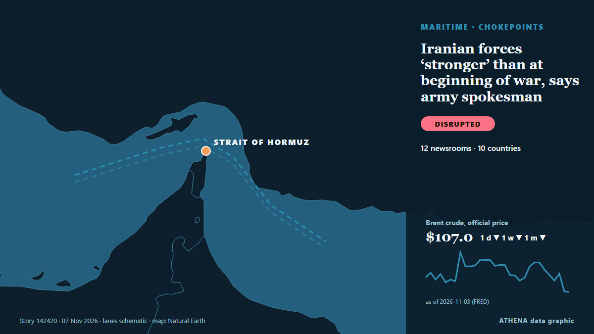

Kriege und Konflikte
GesponsertPräsentiert von  Cybernetics and Artificial Intelligence Lab Welcome to the Cybernetics and Artificial Intelligence Laboratory, established at the Department of Business Administration of the National and Kapodistrian University of Athens. The lab is headed by Professor Dimitrios Thomakos. The lab aims to do research that can be published in top venues. Our research uses tools and methods of Artificial Intelligence, and lies in the following areas: - Forecasting - Decision making - Cyber security - Finance We are always looking forward to collaborating with exceptional students!
Cybernetics and Artificial Intelligence Lab Welcome to the Cybernetics and Artificial Intelligence Laboratory, established at the Department of Business Administration of the National and Kapodistrian University of Athens. The lab is headed by Professor Dimitrios Thomakos. The lab aims to do research that can be published in top venues. Our research uses tools and methods of Artificial Intelligence, and lies in the following areas: - Forecasting - Decision making - Cyber security - Finance We are always looking forward to collaborating with exceptional students!
| 25. Okt. | 0 |
|---|---|
| 26. Okt. | 0 |
| 27. Okt. | 0 |
| 28. Okt. | 0 |
| 29. Okt. | 0 |
| 30. Okt. | 0 |
| 31. Okt. | 1 |
| 1. Nov. | 0 |
| 2. Nov. | 2 |
| 3. Nov. | 10 |
| 4. Nov. | 5 |
| 5. Nov. | 3 |
| 6. Nov. | 3 |
| 7. Nov. | 0 |
Schlagzeilen werden auf Englisch angezeigt, wie veröffentlicht.

Iranian forces ‘stronger’ than at beginning of war, says army spokesman
The comment follows reports of US strikes on Iran's Qeshm Island in the Strait of Hormuz. von Free Malaysia Today
Zelensky warns of new Russian strikes on Ukraine energy sector
KYIV: Ukrainian President Volodymyr Zelensky on Friday warned that Russian planned a fresh strike against Ukraine’s energy sector and renewed his call for Patriot anti-missile systems. von Arab News
Syria aids Saudi Arabia with military advice and training amid Houthi attacks, sources say
Joint training exercises were under way and more were planned in both security and defence. von The Straits Times
French judges probe war crimes complaint against Israeli army in Lebanon
France has opened a judicial investigation into a war crimes complaint over an Israeli strike on a residential building in Lebanon in 2024, lawyer Clemence Bectarte told AFP on Tuesday. von Naharnet
Death toll from Russian strike on Ukrainian aid centre reaches 42
Up to 33 people remained buried under rubble in the village of Komyshuvakha as rescue and recovery efforts continued. von Free Malaysia Today
Stranded cruise ship Odyssey leaves Cambodia with no passengers
A U.S. cruise ship that suspended its operations in Cambodia has left with only crew aboard, according to Cambodian officials. von ABC News (International)
Oil falls for a fourth day on expectations for lower risk of Iran war escalation
Both oil benchmarks closed at their lowest since Aug 31. von The Business Times
Indonesia deploys over 20,000 troops to Jakarta amid wiretapping probe
Authorities have not confirmed that the military deployment in Jakarta is connected to the arrests of two senior police officers and former national police chief Listyo Sigit Prabowo. von CNA (Channel NewsAsia)
Ukrainian drones strike Russia’s Ryazan region, with fires reported at oil refinery and Wildberries warehouse
Ukrainian drones attacked Russia’s Ryazan region overnight on November 5, Ryazan Governor Pavel Malkov said. von Meduza (English)
Asia hopes Democrats can provide relief from Trump's Iran war, tariffs
ASIAN nations that have borne the brunt of the US-Israeli war on Iran and US President Donald Trump’s trade tariffs are hopeful that Democrats will be able to temper his most harmful policies. von New Straits Times
Dozens dead and missing after Russian strike on Ukrainian aid centre, officials say
Nov 4 - The death toll from a Russian bombing of an aid distribution point in Ukraine's southeastern Zaporizhzhia region on Monday has risen to 37, with dozens missing, officials said, in one of the… von The Straits Times
Drone attack sparks fire at Ozon logistics centre in Russia’s Adygea
A fire broke out at an Ozon logistics centre in the city of Adygeysk, in Russia’s Republic of Adygea, following a drone attack. von AzerNews
Hezbollah denies sending military experts to Yemen
Hezbollah denied Wednesday allegations by Yemen’s Southern Transitional Council regarding the presence of Hezbollah experts in the country. von Naharnet
Washington strikes Iranian targets in the Strait of Hormuz: US official
The United States launched strikes on Iranian targets, a U.S. official said, in what appeared to be a limited operation on the eve of Tuesday’s crucial midterm elections. von The National Herald
Russia hits power stations in Ukraine’s regions of Kyiv
Russia has hit two power stations in Ukraine’s regions of Kyiv and Zhytomyr, the Russian defence ministry said on Telegram on Wednesday, keeping up nearly daily strikes on its neighbour’s energy… von Cyprus Mail
Russian strikes disrupt water and power in Kyiv
KYIV, Ukraine, Nov 4, (AP): Overnight attacks on critical infrastructure triggered power and water outages across Kyiv and surrounding regions Wednesday as rescuers combed throug... von Arab Times
Russian strike on Kharkiv hospital raises injury toll to 73
In Kharkiv, 73 people were injured as a result of a Russian attack on the night of November 3. von Ukrinform (English)
Indian seafarer killed in attack off Oman; 13 crew rescued from Al Jusufi
Union shipping minister Sarbananda Sonowal confirmed the death of seafarer Gandhar Nahim Ajij of Gujarat. von Hindustan Times
North Korea launches unidentified projectile toward the sea, South Korea says
South Korea says North Korea has launched an unidentified projectile toward the sea. von ABC News (International)